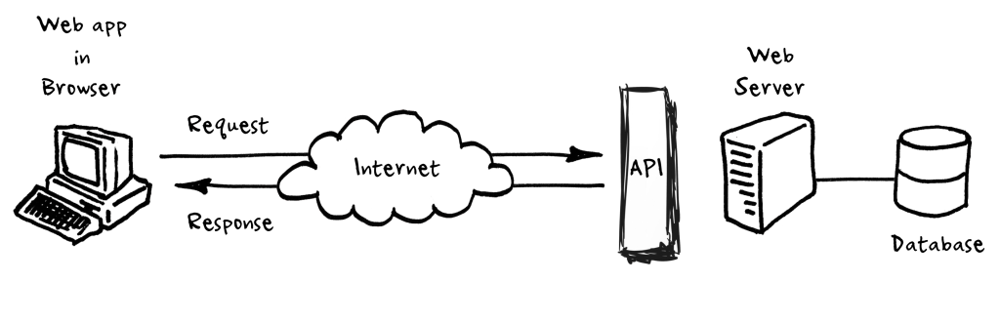

download.file(url = "https://sta323-sp23.github.io/scripts/apiDemo.R",
destfile = "apiDemo.R")APIs
Announcements
Reminder:
- Lab 7 due today at 5:00pm.
- Final project presentations during lab Tuesday, April 25.
Application Programming Interfaces (APIs)
What is an API?
An API is a messenger that takes requests and returns responses. It allows for interaction between applications, databases, and devices.
. . .
If you want to
embed a map on your website, you’ll probably use Google’s API
embed a tweet on your website, you’ll use Twitter’s API
trade stocks in Python or R, you’ll probably use your broker’s API
pull genetic sequence data from GenBank, you’ll use GenBank’s API
create 54 repositories named lab07-[github_team_name], you’ll probably use GitHub’s API
Client-server framework with an API

Protocols
A computer protocol is a set of rules that govern how multiple computers communicate.
IP: Internet Protocol
FTP: File Transfer Protocol
HTTP: Hyper Text Transfer Protocol The key protocol that governs data transfer over the internet Allows HTML, CSS, JS to be transferred from a server to your browser
HTTPS: Hyper Text Transfer Protocol Secure
. . .
Why do we care?
Web APIs are built on HTTP. Since so much of what we do is built over the web it is natural for web APIs to follow this protocol.
URLs

Query strings
Provides named parameter(s) and value(s) that modify the behavior of the resulting page.
Format generally follows:
field1=value1&field2=value2&field3=value3- note the
=and&
. . .
Some quick examples,
http://lmgtfy.com/?q=hello%20world
http://maps.googleapis.com/maps/api/geocode/json?sensor=false&address=1600+Amphitheatre+Parkway
https://nomnom-prod-api.dennys.com/mapbox/geocoding/v5/mapbox.places/raleigh,%20nc.json?types=country,region,postcode,place&country=us,pr,vi,gu,mp,ca
URL encoding
This is will often be handled automatically by your web browser or other tool, but it is useful to know a bit about what is happening
Spaces will encoded as ‘+’ or ‘%20’
Certain characters are reserved and will be replaced with the percent-encoded version within a URL
| ! | # | $ | & | ’ | ( | ) |
|---|---|---|---|---|---|---|
| %21 | %23 | %24 | %26 | %27 | %28 | %29 |
| * | + | , | / | : | ; | = |
| %2A | %2B | %2C | %2F | %3A | %3B | %3D |
| ? | @ | [ | ] | |||
| %3F | %40 | %5B | %5D |
- Characters that cannot be converted to the correct charset are replaced with HTML numeric character references (e.g. a \(\Sigma\) would be encoded as
Σ)
REST APIs
Representational State Transfer
describes an architectural style for web services (not a standard)
all communication via http requests
a REST API should specify what it can provide and how to use it, details such as query parameters, response format, request limitations, public use/API keys, method (GET/POST/PUT/DELETE), language support, etc.
HTTP methods / verbs
- GET: fetch a resource
- most common, literally request info.
- POST: create a new resource
- example: create new GitHub repositories. In general, any data you send to the website.
- PUT: update a resource
- DELETE: delete a resource
Less common verbs: HEAD, TRACE, OPTIONS
Status codes
1xx: informational messages
2xx: successful
3xx: redirection
4xx: client error
5xx: server error
Example
https://anapioficeandfire.com/
Documentation
While there is a lot of standardization, every API is different and you will need to review the documentation of each.
See documentation here for AAOIF.
. . .
Resources/endpoints
- Root - https://www.anapioficeandfire.com/api
- List books - https://www.anapioficeandfire.com/api/books
- Specific book - https://www.anapioficeandfire.com/api/books/1
Pagination
An API of Ice And Fire provides a lot of data about the world of Westeros. To prevent our servers from getting cranky, the API will automatically paginate the responses. You will learn how to create requests with pagination parameters and consume the response.
Things worth noting:
Information about the pagination is included in the Link header Page numbering is 1-based You can specify how many items you want to receive per page, the maximum is 50
Constructing a request with pagination
You specify which page you want to access with the ?page parameter, if you don’t provide the ?page parameter the first page will be returned. You can also specify the size of the page with the ?pageSize parameter, if you don’t provide the ?pageSize parameter the default size of 10 will be used.
Exercise
How many characters are included in this API?
What percentage of the characters are alive?
. . .
Download the in-class solution and example API code from 04/19 here:
Another example
pokeapi: https://pokeapi.co/docs/v2
Further reading
An Introduction to APIs. (2023). https://zapier.com/learn/apis/
Podila, P. (2022). HTTP: The Protocol Every Web Developer Must Know - Part 1. https://code.tutsplus.com/tutorials/http-the-protocol-every-web-developer-must-know-part-1–net-31177
Tools for Working with URLs and HTTP. https://httr.r-lib.org////index.html